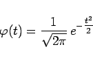
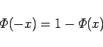
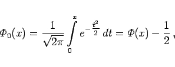
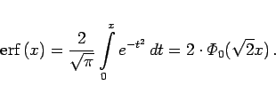
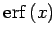

Inhalt Index DeskTop Bronstein

 Wahrscheinlichkeitsrechnung und Mathematische Statistik Wahrscheinlichkeitsrechnung Stetige Verteilungen
Wahrscheinlichkeitsrechnung und Mathematische Statistik Wahrscheinlichkeitsrechnung Stetige Verteilungen


der normierten Normalverteilung. Ihre Dichtefunktion
|  | (16.74b) |
beschreibt die GAUSSsche Glockenkurve (s. Abbildung).
Die (0,1)-Normalverteilung  liegt tabelliert vor (Tabelle Normierte Normalverteilung), und zwar hier nur für positive Argumente x, da für negative Argumente der Zusammenhang
liegt tabelliert vor (Tabelle Normierte Normalverteilung), und zwar hier nur für positive Argumente x, da für negative Argumente der Zusammenhang
|  | (16.75) |
genutzt werden kann.
|  | (16.76a) |
|  | (16.76b) |
(Zur Fehler-Funktion  s. auch Fehler-Funktion.)